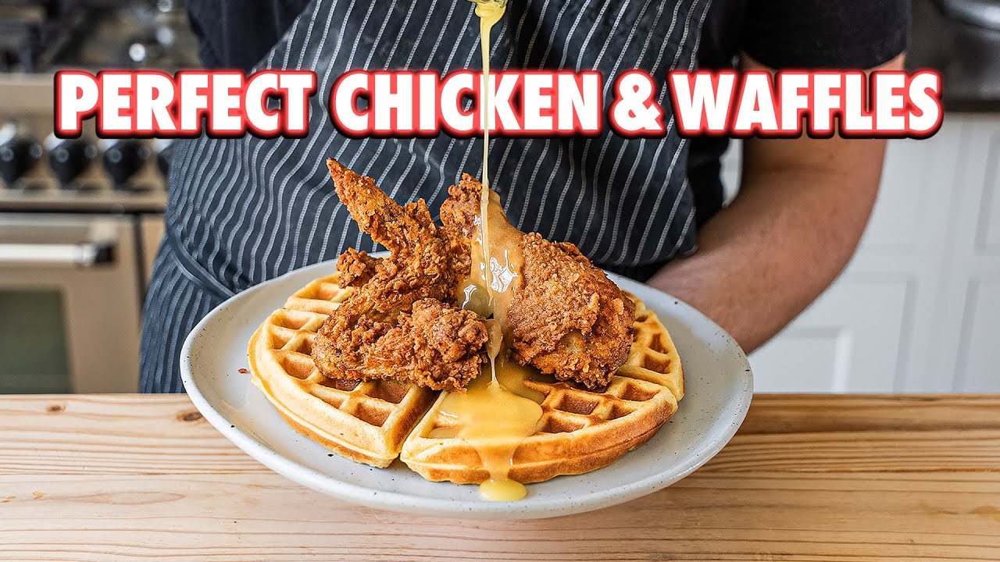

Chicken and Waffles

By Joshua Weissman
Chicken and waffles, especially when homemade, are probably one of the most legendary
albeit strange combinations in the world. And this guide has it all, from crispy fried chicken,
yeasted Belgian waffles, and a surprise garlic bread waffle at the end.
Ingredients
Belgian Waffles
- 1.5 cups whole milk
-
- 1.5 tsp instant yeast
-
- 1/3 cup unsalted butter
-
- 2 tbsp granulated sugar
-
- 1 tsp kosher salt
-
- 2 whole eggs
-
- 1 egg yolk
-
- 2 cups (300g) all purpose flour
-
Salted Honey Butter
- 1/4 cup wildflower honey
-
- 2 tbsp salted butter
-
Garlic Butter
- 1/3 cup unsalted butter
- 4 cloves garlic, minced
- 2 tsp finely chopped parsley
Marinade
- 1.5 cup buttermilk
- 1 tbsp fine sea salt
- 1 tbsp garlic powder
- 1 tbst smoked paprika
- 2 tsp white pepper
- 2 tsp cayenne
- 1 whole chicken cut into 8 pieces
Dredge
- 2 cups all-purpose flour
- 1 Tbsp kosher salt
- 1 Tbsp garlic powder
- 2 tsp ginger powder
- 1 Tbsp smoked paprika
- 2 tsp cayenne
- 2 tsp white pepper
Instructions
Chicken Method
- Start by patting the chicken dry and separating it into 8 pieces by removing the legs, wings, breasts, and drumsticks.
- For the marinade, add and mix all ingredients together and add in the chicken. Cover and let marinate for 1-24 hours.
- For the dredge, in a medium bowl combine all-purpose flour, cayenne powder, ginger powder, smoked paprika, white pepper, garlic powder, and kosher salt.
- Heat oil in a heavy bottom pot to 350F.
- While oil heats, dust a baking sheet with flour and drizzle, and toss a small amount of buttermilk marinade into the flour dredge.
- Toss marinated chicken into the flour making sure to coat thoroughly, press flour into chicken, and place onto the floured baking sheet.
- Carefully lay chicken (3-4 pieces at a time) into the 350F frying oil for 12-15 minutes until the chicken registers 165F internally.
- Remove chicken from the oil and let cool on a wire rack set in a lined baking sheet.
Waffle Method
- In a medium bowl, add 95F whole milk and whisk in instant yeast, and set to the side.
- In a large bowl, add in the eggs and egg yolk then whisk to combine.
- Whisk in the yeast mixture until thoroughly combined then gently whisk in melted unsalted butter.
- In a large bowl, add all-purpose flour, granulated sugar, and kosher salt. Whisk together.
- Whisk wet ingredients into the dry ingredients until smooth.
- Wrap and let rest and rise for 1 hour or overnight.
- Heat waffle maker to manufacturer's instructions and spray lightly with cooking spray.
- Add ¾ cup, or 1 cup of batter to the center of the waffle maker, close gently with a little press, and let cook for the recommended time.
- Remove finished waffle and repeat with remaining batter.
Honey Butter Method
- In a small pan, add in honey and heat over medium heat until a little runny. Whisk in cold salted butter, turn off the heat, and continue whisking until emulsified.
Assembly
- Place waffle onto a plate.
- Top with the desired piece of chicken.
- Drizzle on honey butter and an optional but recommended drizzling of maple syrup.